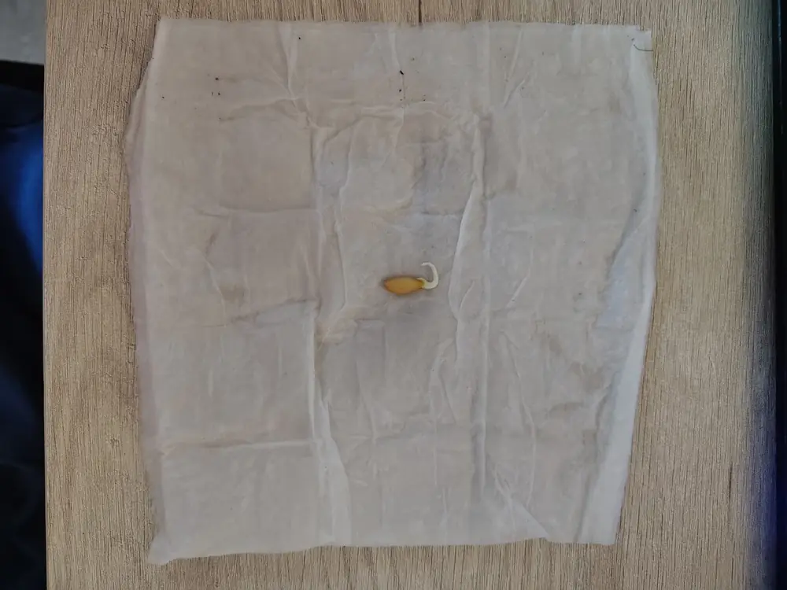
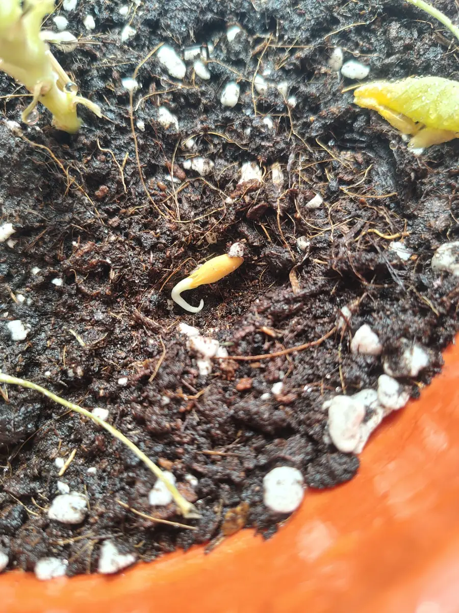
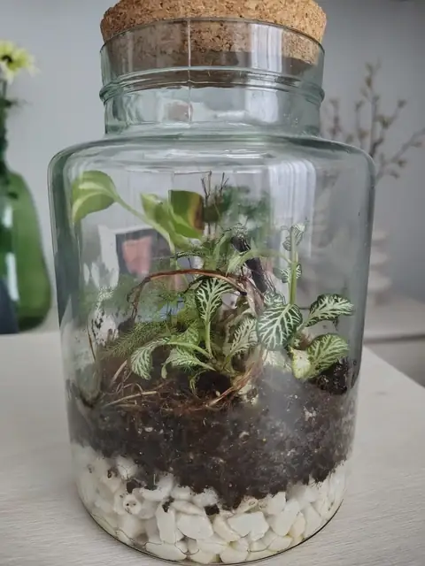

El método de la servilleta húmeda es la forma más sencilla de ver si tus semillas de tomate están vivas y de tenerlas germinadas en pocos días sin gastar tierra ni semilleros. Solo necesitas papel de cocina, agua y un recipiente con tapa. En esta guía tienes qué semillas usar, cómo prepararlas, la temperatura que necesitan, cuántos días suelen tardar, cuándo pasarlas a tierra y los errores que más plantones estropean.

Así se ve una semilla germinada en la servilleta: la raicilla blanca sale por la punta. En la foto es de melón; con el tomate el proceso es el mismo, pero la semilla es más pequeña y plana.
1. Qué necesitas
- Semillas de tomate: de sobre o sacadas de un tomate (más abajo verás la diferencia).
- Papel de cocina o servilletas de papel, mejor sin perfume ni dibujos.
- Un recipiente con tapa: un táper, un plato con otro plato encima o una bolsa de cierre zip. Sirve para que la humedad no se escape.
- Agua del grifo reposada o de lluvia, y un pulverizador si tienes.
- Un rotulador para apuntar la variedad y la fecha. Las semillas de tomate son todas iguales y se confunden enseguida.
- Para después: semilleros o vasitos con agujeros y un sustrato ligero (tienes cómo prepararlo en Cómo hacer el sustrato).
2. Qué semillas usar: de sobre o de un tomate
Las semillas de sobre son la opción más segura: vienen limpias, secas y con la variedad indicada. Mira la fecha del sobre; las semillas de tomate bien guardadas, en un sitio seco y fresco, suelen conservar la capacidad de germinar varios años, aunque cada año que pasa germinan menos.
También puedes sacar semillas de un tomate que te haya gustado. Funciona, pero ten en cuenta dos cosas:
- Si el tomate es un híbrido (en los sobres aparece como «F1»), las plantas hijas no salen iguales a la madre: pueden dar tomates distintos. Con variedades tradicionales (las que se guardan de año en año) sí suelen salir parecidas.
- Cada semilla viene envuelta en una capa de gel que frena la germinación mientras está dentro del fruto. Hay que quitarla antes de ponerlas en la servilleta.
3. Cómo preparar las semillas sacadas de un tomate
- Elige un tomate bien maduro. Córtalo por la mitad y saca las semillas con su gel con una cucharilla.
- Ponlas en un vaso con un poco de agua y déjalas 2 o 3 días tapadas con un papel, removiendo una vez al día. Se forma una capa blanquecina por encima: es normal, es una fermentación suave que deshace el gel.
- Llena el vaso de agua y remueve. Las semillas buenas se van al fondo; las que flotan suelen estar vacías y se pueden tirar.
- Pásalas por un colador fino y acláralas bien con agua del grifo.
- Si vas a germinarlas ya, ponlas directamente en la servilleta. Si quieres guardarlas, extiéndelas sobre un plato (no sobre papel, se pegan) y déjalas secar unos días antes de meterlas en un sobre.
4. El método de la servilleta, paso a paso
- Moja el papel y escúrrelo: tiene que quedar húmedo, sin que gotee. Un papel encharcado ahoga las semillas y favorece el moho.
- Reparte las semillas sobre una mitad del papel, separadas al menos 1 o 2 cm entre sí, para que las raíces no se enreden.
- Dobla la otra mitad del papel por encima para taparlas.
- Mételo en el recipiente o en la bolsa zip y ciérralo, dejando algo de aire dentro. Apunta la variedad y la fecha.
- Busca un sitio templado: entre 20 y 30 °C es el rango en el que el tomate germina mejor. No necesita luz para germinar, así que un armario o una estantería de un cuarto cálido valen. Evita poner el recipiente directamente encima de un radiador: el calor excesivo también las estropea.
- Revisa una vez al día: abre un momento para que se renueve el aire, mira si el papel sigue húmedo y pulveriza un poco si se está secando.
Es el mismo método que se usa con otras semillas de huerta, como el melón; si quieres verlo con fotos de cada paso, lo tienes en Cómo germinar semillas de melón.
5. Cuántos días tarda en germinar
Con una temperatura de unos 20-25 °C, lo normal es que las semillas de tomate empiecen a abrirse en torno a 5 a 10 días. Con más calor puede ir algo más rápido, y en una casa fría puede tardar dos semanas o más. Las semillas viejas también van más lentas.
Si pasadas tres semanas no ha germinado ninguna, revisa la temperatura y la humedad. Si estaban bien, lo más probable es que las semillas ya no sean viables.
6. Cuándo y cómo pasarlas a tierra
El mejor momento para sembrar la semilla germinada es cuando la raicilla mide entre medio y un centímetro. Si esperas mucho más, la raíz se pega al papel y se rompe al sacarla.
- Llena el semillero o el vasito con sustrato ligero y humedécelo antes de sembrar.
- Haz un hoyito de medio centímetro con un palillo.
- Coge la semilla por la cáscara, nunca por la raíz, con unas pinzas o con la punta de un palillo. Si la raíz se ha pegado al papel, corta el trocito de papel y siémbralo con ella.
- Pon la raíz hacia abajo y tápala con una capa fina de sustrato, sin apretar.
- Riega con pulverizador o desde abajo (poniendo el vasito en un plato con agua unos minutos) para no desenterrarla.

Semilla germinada lista para taparla: la raíz va hacia abajo y se cubre con una capa fina de tierra.
7. Los primeros días del plantón
- Luz: en cuanto asoma el tallo, el tomate necesita mucha luz. Con poca luz los tallos se estiran, se vuelven finos y se doblan (se dice que «se ahílan»). Pon el semillero junto a la ventana más luminosa o bajo una lámpara de cultivo.
- Riego: tierra húmeda pero no empapada. El exceso de agua en semilleros favorece hongos que tumban los plantones por la base.
- Temperatura: le sienta bien un ambiente templado; el frío por la noche lo frena mucho.
- Trasplante: cuando tenga varias hojas verdaderas (las que tienen forma de hoja de tomate, no las dos primeras redondeadas), pásalo a una maceta mayor. El tomate admite enterrar parte del tallo al trasplantar: echa raíces nuevas en la parte enterrada.
Si en la tierra del semillero aparece una pelusa blanca, mira Moho blanco en la tierra de las macetas; y si ves mosquitas pequeñas volando alrededor, Mosquitas del sustrato.
8. Cuándo sembrar tomate en España
El tomate es una planta de verano: no aguanta las heladas y necesita calor para dar fruto. En la mayor parte de España se siembra en semillero, a cubierto, entre enero y marzo, para trasplantarlo al exterior en primavera, cuando ya no hay riesgo de heladas (abril o mayo, según la zona).
En otoño puedes usar la servilleta para probar si tus semillas siguen vivas antes de la temporada, o para un tomate de interior. Pero ten en cuenta que en invierno, dentro de casa, la luz suele quedarse corta: sin una lámpara de cultivo es difícil que la planta crezca fuerte y dé fruto.
9. Errores frecuentes
- Papel encharcado: las semillas se pudren o se llenan de moho. Húmedo sí, chorreando no.
- Recipiente sin abrir en días: falta de aire y moho. Ábrelo un momento cada día.
- Sitio frío: en una habitación fresca puede tardar mucho o no germinar. Busca el rincón más cálido de la casa.
- Esperar demasiado para sembrar: la raíz se enreda en el papel y se rompe.
- Coger la semilla por la raíz: la punta de la raíz es muy delicada; si se daña, el plantón se retrasa o muere.
- Poca luz al nacer: plantones largos y débiles que luego se doblan.
Preguntas rápidas
¿Las semillas de un tomate del súper germinan? Muchas veces sí, si el tomate estaba maduro y se quita el gel. Pero si es un híbrido, los tomates de la nueva planta pueden ser distintos.
¿Hay que dejar las semillas en remojo antes? No es imprescindible con el tomate. Si son semillas viejas, unas horas en agua templada antes de ponerlas en la servilleta pueden ayudar a que se hidraten.
¿Necesitan luz para germinar? No. Germinan igual a oscuras; la luz la necesitan en cuanto sale el tallo.
¿Puedo sembrar directamente en tierra sin servilleta? Sí. La servilleta solo sirve para ver cuáles germinan y no gastar semilleros con semillas que no van a nacer.
Ha salido moho en la servilleta, ¿qué hago? Pasa las semillas que estén bien a un papel nuevo y limpio, con menos agua, y abre el recipiente más a menudo. Las que estén blandas o negras, tíralas.
Son pautas generales: los días de germinación dependen de la variedad, la edad de la semilla y la temperatura de tu casa. Apunta las fechas y observa cómo van.
Te puede interesar: Cómo germinar semillas de melón · Cultivar lechugas en casa · Cómo hacer el sustrato · Moho blanco en las macetas

¿Prefieres que te lo monte yo?
Hago terrarios cerrados por encargo en la Comunidad de Madrid, desde 25 €.
Ver cómo pedir el tuyo →